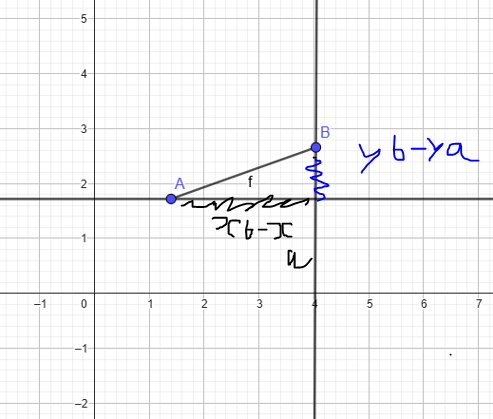
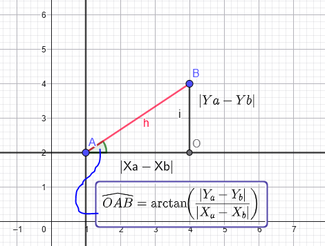
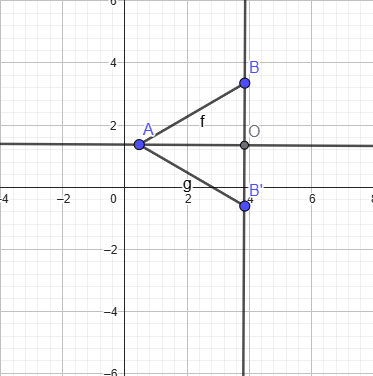
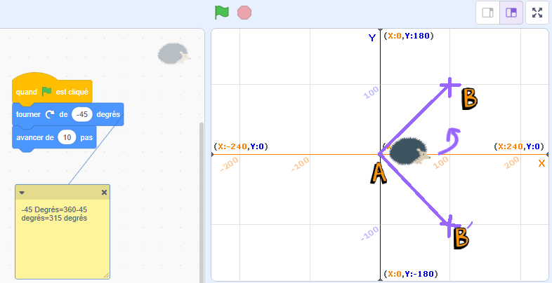
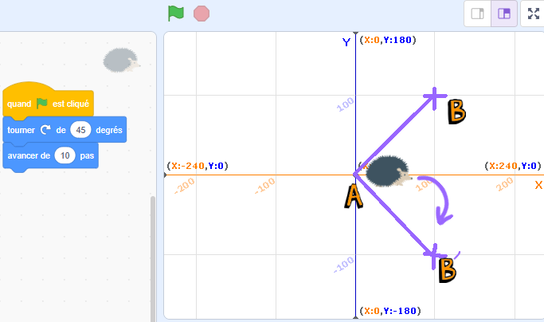
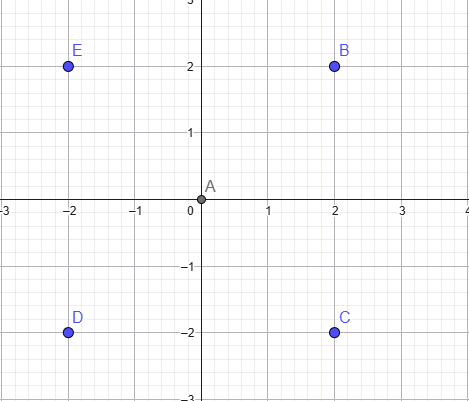
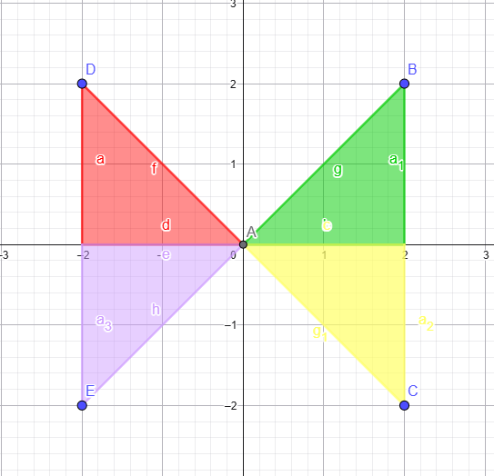
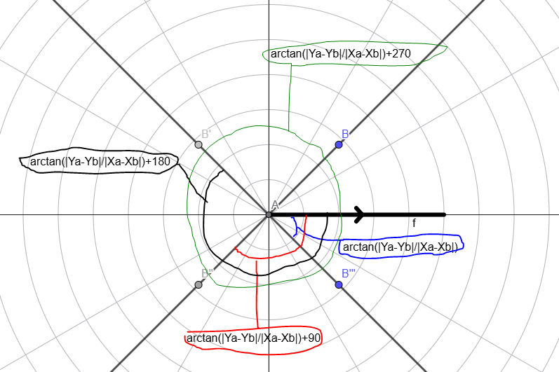

Maplotlib. C'est le premier résultat qu'on obtient quand on recherche "bibliothèque python pour créer grapheur". Avec cette bibliothèque, on peut littéralement créer un graphe en 7 lignes
import matplotlib.pyplot as plt
x = [1, 2, 3, 4]
y = [10, 20, 25, 30]
plt.plot(x, y)
plt.xlabel("X")
plt.ylabel("Y")
plt.show()
Recodons-la... Sans bibliothèques (exceptées turtle (bibliothèque graphique) et maths, qui nous facilitera la tâche pour les fonctions trigonométriques essentiellement)
Mais avant de foncer tête baissée, relevons-la un peu de peur d'aller droit dans le mur. Un grapheur, c'est un outil numérique de traçage. Ici, nous voulons reproduire le fonctionnement d'une calculatrice numworks
Un grapheur ne calcule pas un coefficient directeur d'une fonction, ce serait trop complexe, et rendrait le tracé impossible pour les fonctions non-linéaires! Pour fonctionner, il calcule simplement les valeurs de y soit f(x) pour des valeurs de x calculées avec un interval (par exemple x=0.01; 0.02...). Cet interval est ajustable selon la fonction entrée. Ensuite, il relie ces points. C'est le petit point technique sur lequel nous nous attarderons le plus longtemps.
Voici comment sera organisé notre programme:
Avant de commencer à coder, nous devons savoir comment relier deux points de coordonnées (Xa, Ya) et (Xb, Yb) avec turtle.
Le triangle ABO (notons O le point de coordonnées O(Xb; Ya) est rectangle. En effet, les axes X et Y sont perpediculaires. AB
 
Maintenant que nous savons de combien avancer (nous ferons un petit calcul d'échelle dans le script), il faut qu'on sache à combien de degrés s'orienter ! Pour un angle d'un triangle rectangle, les rapports côté opposé/hypoténuse, côté adjacent/hypoténuse et côté opposé/côté adjacent (entre autres), sont des constantes. Ils définissent des fonctions universelles : sinus, cosinus, tangente. On a ensuite créé les fonctions arcsin, arcoss et artan qui sont les primitives de leurs fonctions respectives, artan(tan(a))=a. Pour plus de détails, je vous invite à consulter L'Histoire des fonctions trigonométriques. En utilisant la fonction tangente(x), on obtient:
$$\widehat{OAB} = \arctan\!\left( \frac{|Y_a - Y_b|}{|X_a - X_b|} \right)$$
Mais l'angle que nous avons calculé n'est pas une orientation. Il ne suffit pas de s'orienter à \(\widehat{OAB}\). En effet, et cela peut paraître assez intuitif comme nous avons fourni les longueurs en valeur absolue, il nous est impossible de distinguer ces deux cas :



Nous travaillons sur du 2D: Un vecteur nommé axe des abcisses coupe perpendiculairement un autre vecteur, l'axe des ordonnées! Cela forme donc quatre quadrants. à partir d'un \(\Delta x \text{( longeur |Xa - Xb|)}\) et d'un \(\Delta y \text{( longeur |Ya - Yb|)}\), on peut remarquer 4 cas possibles de placement de B:

Dans notre cas, nous pourrons nous en sortir avec des conditions vérifiant la position relative des points (2 if) en python. Mais quand nous travaillerons sur la 3D isométrique (futur projet), on ajoutera Zb-Za donc on aura 2*2*2 possibilités!, et 3 if à placer
Si on se place dans une base à n-dimensions, on aura 2^n possibilités, pour n paramètres à vérifier avec If (2^n if, et n if indentés)
On voit bien que notre méthode n'est pas 'automatisée', le script doit vérifier n solution (n étant le nombre de vecteurs non colinéaires différents dans le plan, c'est-à-dire, la dimension n dans laquelle nous travaillons)
Pour éviter ces \(2^n\) cas et automatiser complètement la direction, on change d’approche :
au lieu de déterminer un angle avec des conditions, on calcule simplement le vecteur
direction \(v = B - A\), puis son vecteur unitaire \(u = \frac{v}{\|v\|}\). Cette méthode
fonctionne en 2D, en 3D, et en nD sans ajouter le moindre if.
En dimension supérieure, il n’existe d’ailleurs plus d’angle unique comme avec
atan2: atan2 est une fonction incluse dans math. Elle sert à obtenir automatiquement l’angle exact d’un point vers un autre en 2D, en tenant compte des signes de dx et dy pour connaître le bon quadrant sans utiliser de conditions (on aurait pu l'utiliser dès le départ, mais il est assez intéressant de comprendre son fonctionnement). Je vous conseille de consulter l'article Wikipédia suivant https://fr.wikipedia.org/wiki/Atan2. La direction doit être représentée par un vecteur (ou, en 3D, par une orientation
via matrices de rotation ou quaternions). Cette approche vectorielle est la seule réellement
généralisable pour relier deux points dans un espace de dimension quelconque, nous l'utiliserons dans un prochain projet(voir Lien pas encore disponible.


import math
##Définir dans le script au préalable Ya; Yb; Xa; Xb
if Xb > Xa:
if Yb > Ya:
value=float(math.atan(((Ya-Yb)**2)**0.5/abs(Xa-Xb))) ## sqrt(x^2) = abs(x). Voici deux cas possibles de valeur absolue
else:
value=float(-math.atan(((Ya-Yb)**2)**0.5/abs(Xa-Xb)))
else:
if Yb > Ya:
value=float(-math.atan(((Ya-Yb)**2)**0.5/abs(Xa-Xb)-90))
else:
value=float(-math.atan(((Ya-Yb)**2)**0.5/abs(Xa-Xb))-180)
tourner = turtle.Turtle()
tourner.right(value*180/pi) ##De radians à degrés (on peut aussi utiliser math.degree(value))
atan2(xb-xa, yb-ya): import math dx = Xb - Xa ## d pour delta Δ (variation) dy = Yb - Ya value = math.atan2(dy, dx) tourner = turtle.Turtle() tourner.right(value*180/pi)
Turle possède une fonction native: goto(x, y) qui permet d'éviter la comparaison et le passage par atan2
import turtle
import math
turtle.setworldcoordinates(-300, -300, 300, 300)
turtle.speed(0)
turtle.showturtle()
turtle.bgcolor("black")
turtle.title("Grapheur basique | Timothé")
turtle.pensize(3)
turtle.goto(0, 0)
turtle.penup()
turtle.color("red")
turtle.goto(-300, 0)
turtle.pendown()
turtle.goto(300, 0)
turtle.penup()
turtle.goto(0, -300)
turtle.pendown()
turtle.goto(0, 300)
turtle.penup()
turtle.goto(-300,0)
def Grapheur() :
a=str(input("Entrez une fonction"))
def f(x):
return eval(a, {"__builtins__": None}, {"x": x, "math": math, **math.__dict__})
x=-300
y=0
y=float(f(x))
#Il faut vérifier ymax et ymin pour l'échelle (approximativement)
ymax=0
ymin=0
yabs=0
while x !=300 :
x = x+10
y=f(x)
if ymin > y:
ymin=y
elif ymax < y:
ymax=y
print ("ymax est probablement ", ymax, " et ymin est probablement", ymin)
if abs(ymin) > abs(ymax):
yabs=ymin
else :
yabs=ymax
#Sur un segment de 300 unités, yabs doit rentrer (tout pile + 10 pour ne pas frôler. On a donc une équation ymax*echelle=300-10
echelle=290/ymax
x=-300
y=f(x)
turtle.goto(x, y*echelle)
turtle.pendown()
turtle.color("blue")
while x != 300:
x=x+10
y=f(x)
turtle.goto(x, y*echelle)
Grapheur()
turtle.done()
Il a donc juste été question de créer un système d'échelle: Calculer la valeur la plus haute (ou basse) de y dans le domaine [-300; 300] et faire en sorte que cette valeur * l'échelle soit égale à 290 (pour ne pas frôler le graphique). Cela a fait une équation simple: echelle=290/yabs
math(impliquant donc le recodage de fonctions trigonométriques par exemple).
Turtle possède une fonction native: goto(x, y) qui permet d'éviter la comparaison et le passage par atan2
import turtle
import math
turtle.setworldcoordinates(-300, -300, 300, 300)
turtle.speed(0)
turtle.showturtle()
turtle.bgcolor("black")
turtle.title("Grapheur basique | Timothé")
turtle.pensize(3)
turtle.goto(0, 0)
turtle.penup()
turtle.color("red")
turtle.goto(-300, 0) #nous n'utiliserons pas cette fonction pour le tracé graphique (que des turle.forward)
turtle.pendown()
turtle.goto(300, 0)
turtle.penup()
turtle.goto(0, -300) #nous n'utiliserons pas cette fonction pour le tracé graphique (que des turle.forward)
turtle.pendown()
turtle.goto(0, 300) #nous n'utiliserons pas cette fonction pour le tracé graphique (que des turle.forward)
turtle.penup()
turtle.goto(-300,0)
def goto(x, y, oldy):
turtle.setheading(0)
AB = (100 + abs(oldy - y)**2)**0.5
Angle = math.atan(abs(oldy - y) / 10)
if y > oldy:
turtle.left(math.degrees(Angle))
else:
turtle.right(math.degrees(Angle))
turtle.forward(AB)
def Grapheur() :
a=str(input("Entrez une fonction"))
def f(x):
return eval(a, {"__builtins__": None}, {"x": x, "math": math, **math.__dict__})
x=-300
y=float(f(x))
oldy=y
#Il faut vérifier ymax et ymin pour l'échelle (approximativement)
ymax=0
ymin=0
yabs=0
while x !=300 :
x = x+10
y=f(x)
if ymin > y:
ymin=y
elif ymax < y:
ymax=y
print ("ymax est probablement ", ymax, " et ymin est probablement", ymin)
if abs(ymin) > abs(ymax):
yabs=ymin
else :
yabs=ymax
#Sur un segment de 300 unités, yabs doit rentrer (tout pile + 10 pour ne pas frôler. On a donc une équation ymax*echelle=300-10
echelle=290/ymax
x=-300
y=f(x)
turtle.pendown()
turtle.color("blue")
turtle.penup()
turtle.goto(x, y * echelle)
turtle.pendown()
while x != 300:
oldy=y
x=x+10
y=f(x)
goto(x, y * echelle, oldy * echelle)
Grapheur()
turtle.done()